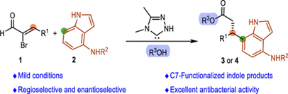
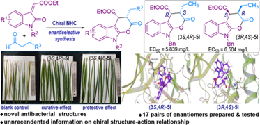
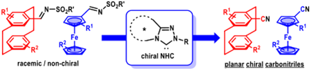
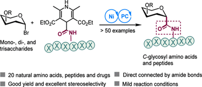
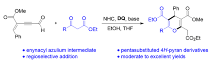
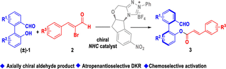
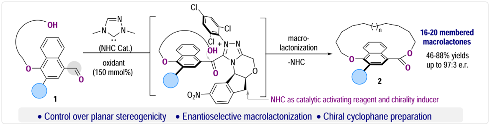
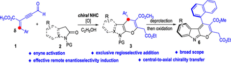
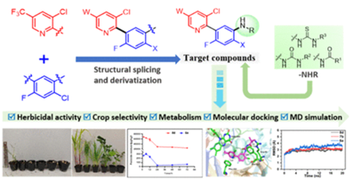

Chenghao Tang, Hui Cai, Chaoyang Song, Xiang Wang, Zhichao Jin, Tingting Li*. N-Heterocyclic
Carbene-Catalyzed Regio-
and Enantioselective C7-Alkylation of 4-Aminoindoles with α-Bromoenals.
Org. Lett. 2024, DOI:10.1021/acs.orglett.3c04266.(PDF)

Kunpeng Teng, Qian Liu, Meng Zhang, Hira Naz, Pengcheng Zheng, Xingxing Wu*, Yonggui Robin Chi*. Design
and
Enantioselective Synthesis of Chiral Pyranone Fused Indole Derivatives with Antibacterial Activities
against Xanthomonas
oryzae pv oryzae for Protection of Rice.
J. Agric. Food Chem. 2024, DOI:10.1021/acs.jafc.3c07491.(PDF)

Ya Lv, Chengli Mou, Qian Liu, Liangzhen Shu, Yuanlin Cai, Xiaokang Lv, Zhichao Jin*, Yonggui Robin Chi*.
Asymmetric
Synthesis of Planar Chiral Carbonitriles and Amines via Carbene-Catalyzed Kinetic Resolution.
Org. Lett. 2024, DOI:10.1021/acs.orglett.3c04342.(PDF)

Xiang-Yu Ye, Guanjie Wang, Zhichao Jin, Bin Yu, Junmin Zhang, Shichao Ren,* Yonggui Robin Chi*. Direct
Formation of
Amide-Linked C Glycosyl Amino Acids and Peptides via Photoredox/Nickel Dual Catalysis.
J. Am. Chem. Soc. 2024, DOI:10.1021/jacs.3c13456.(PDF)

Xiaolin Peng, Yulin Wang, Yixian Huang, Sheng Zhang, Zhichao Jin*, Shi-Chao Ren*. N-Heterocyclic Carbene
Catalysis for
Facile Access to Pentasubstituted 4H-Pyran Derivatives.
Synlett 2024, DOI: 10.1055/a-2253-4365.(PDF)

Zhiguo Zheng, Qian Liu, Xiaolin Peng, Zhichao Jin*, and Jian Wu*. NHC-Catalyzed Chemo- and
Enantioselective Reaction
between Aldehydes and Enals for Access to Axially Chiral Arylaldehydes.
Org. Lett. 2024, 26, 917-921.(PDF)

Xiaokang Lv, Fen Su, Hongyan Long, Fengfei Lu, Yukun Zeng, Minghong Liao, Fengrui Che, Xingxing Wu*,
Yonggui Robin Chi*.
Carbene organic catalytic planar enantioselective macrolactonization.
Nature Commun. 2024, 15, 958.(PDF)

Xiaolin Peng, Yixian Huang, Wei Wang, Shiguang Li, Ge-fei Hao, Shichao Ren,* Yonggui Robin Chi*. N
Heterocyclic
Carbene-Catalyzed Remote Enantioselective C-C Bond Formation via 1,6-Addition with Formyl Enynes.
ACS Catal. 2024, 14, 2127-2133.(PDF)

Zhongyin Chen, Hui Cai, Xiao Zhang, Meng Zhang, Ge-Fei Hao, Zhichao Jin, Shichao Ren*, Yonggui Robin
Chi*. Design,
Synthesis, and Herbicidal Activity of Substituted 3-(Pyridin-2-yl)Phenylamino Derivatives.
J. Agric. Food Chem. 2024, 72, 2501–2511.(PDF)

Kun Tang, Fen Su, Shijie Pan, Fengfei Lu, Zhongfu Luo, Fengrui Che, Xingxing Wu*, Yonggui Robin
Chi*.
Chin. Chem. Lett. 2024, DOI:10.1016/j.cclet.2024.109495.(PDF)